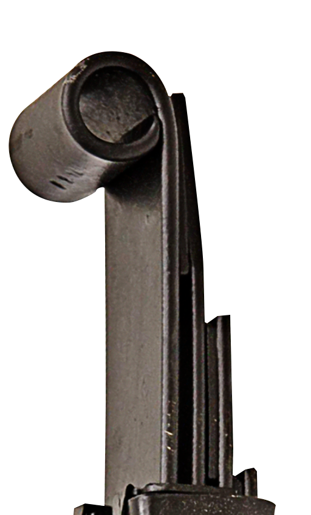
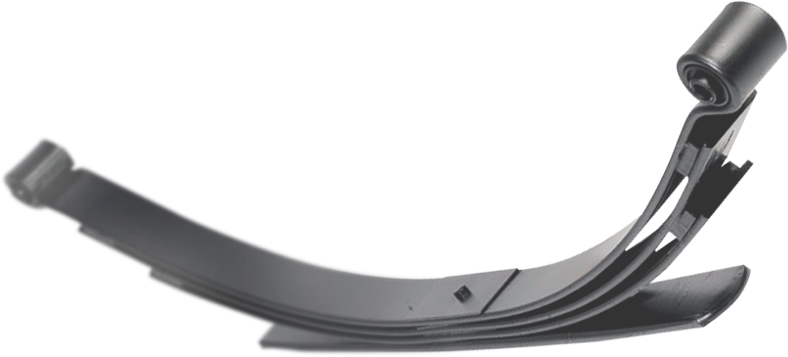
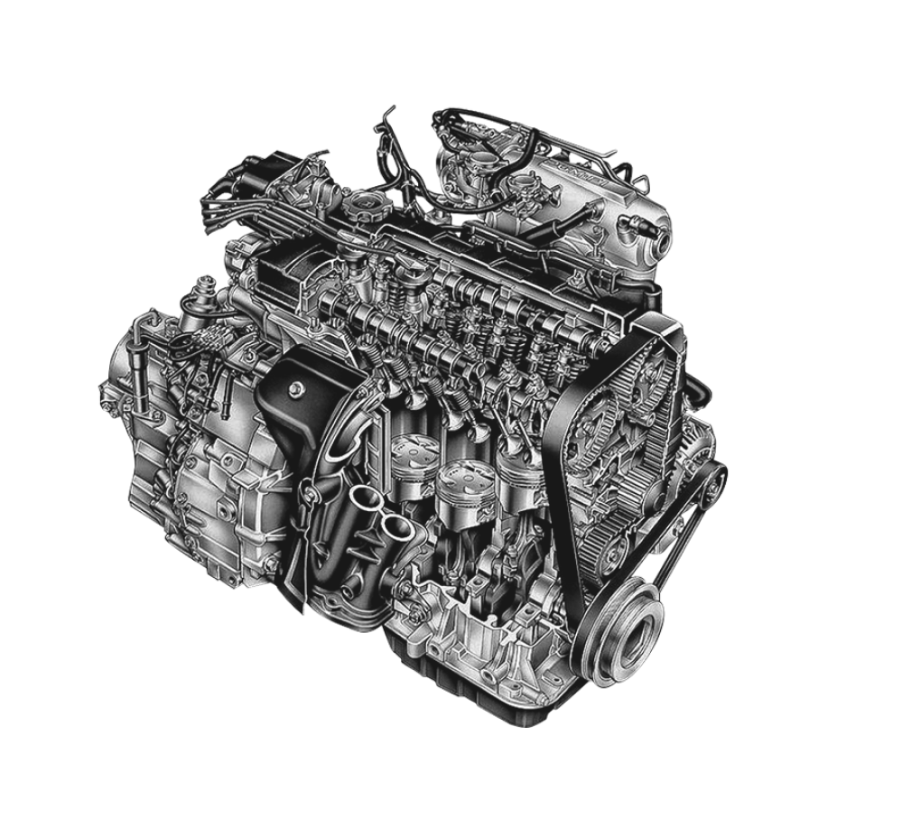

01
Troca de
molas
Substituição de molas de feixe para caminhonetes, caminhões e veículos utilitários.
Solicitar orçamento ↗
Troca e manutenção de molas de feixe para caminhonetes, caminhões e veículos de todos os portes. E uma mecânica completa para cuidar do que mantém você em movimento.

O que fazemos
No Posto de Molas, cuidamos da suspensão e da mecânica do seu veículo com experiência, transparência e serviço bem feito. Do diagnóstico à entrega, você sabe exatamente o que está sendo feito.
↘Cuidado completo
Especialistas em molas de feixe e mecânica automotiva para deixar seu veículo pronto para a estrada.
Substituição de molas de feixe para caminhonetes, caminhões e veículos utilitários.
Solicitar orçamento ↗
Correção, reforço e montagem para recuperar estabilidade, altura e capacidade de carga.
Falar com especialista ↗Revisões e reparos para o motor e os principais sistemas do seu automóvel.
Agendar avaliação ↗
Do diagnóstico à estrada
Identificamos folgas, desgaste, altura e as condições das molas e da mecânica.
Você recebe uma orientação objetiva e um orçamento transparente antes do reparo.
Montagem cuidadosa, conferência final e seu veículo de volta ao trabalho.
Vamos conversar
Fale com o Posto de Molas e conte o que você precisa. Nossa equipe responde rápido.
Chamar no WhatsApp ↗